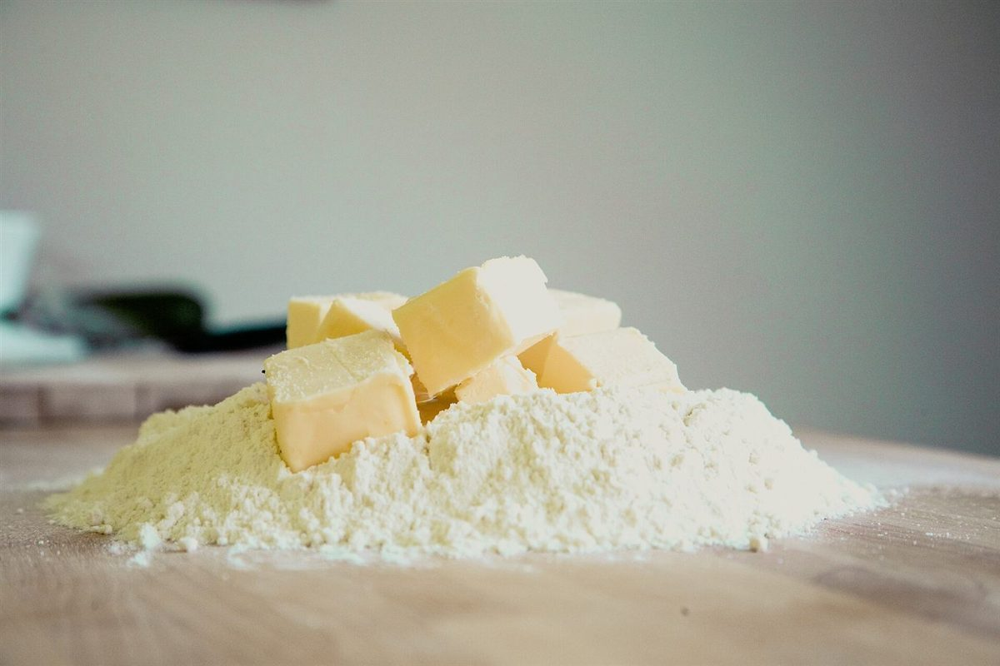
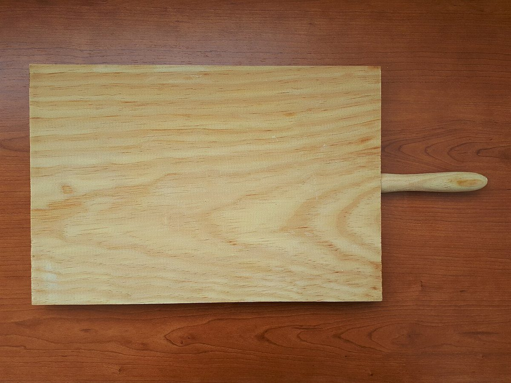
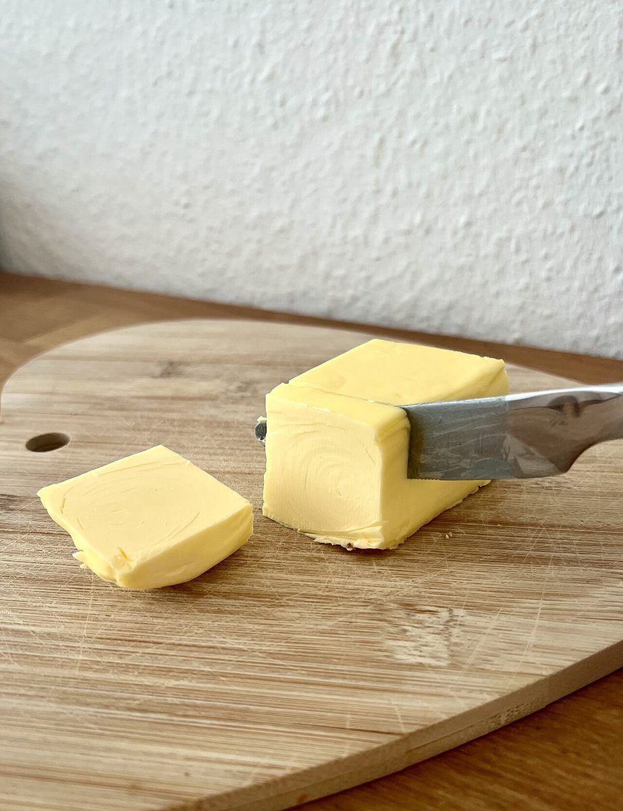
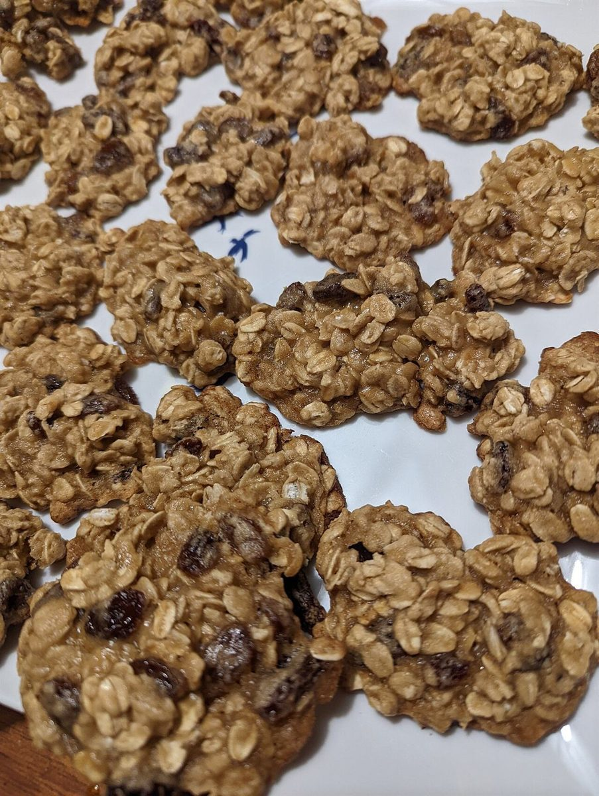
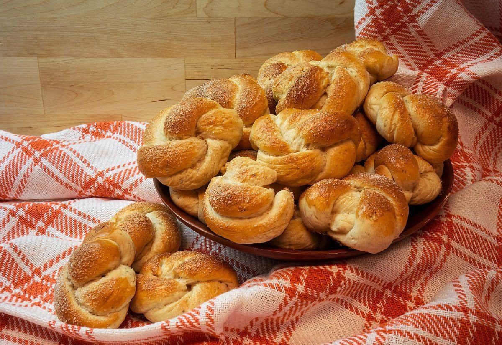
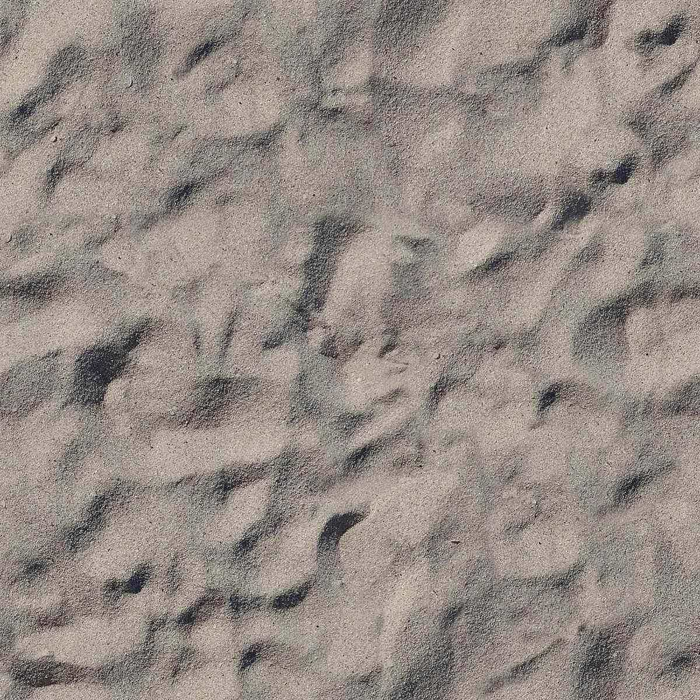
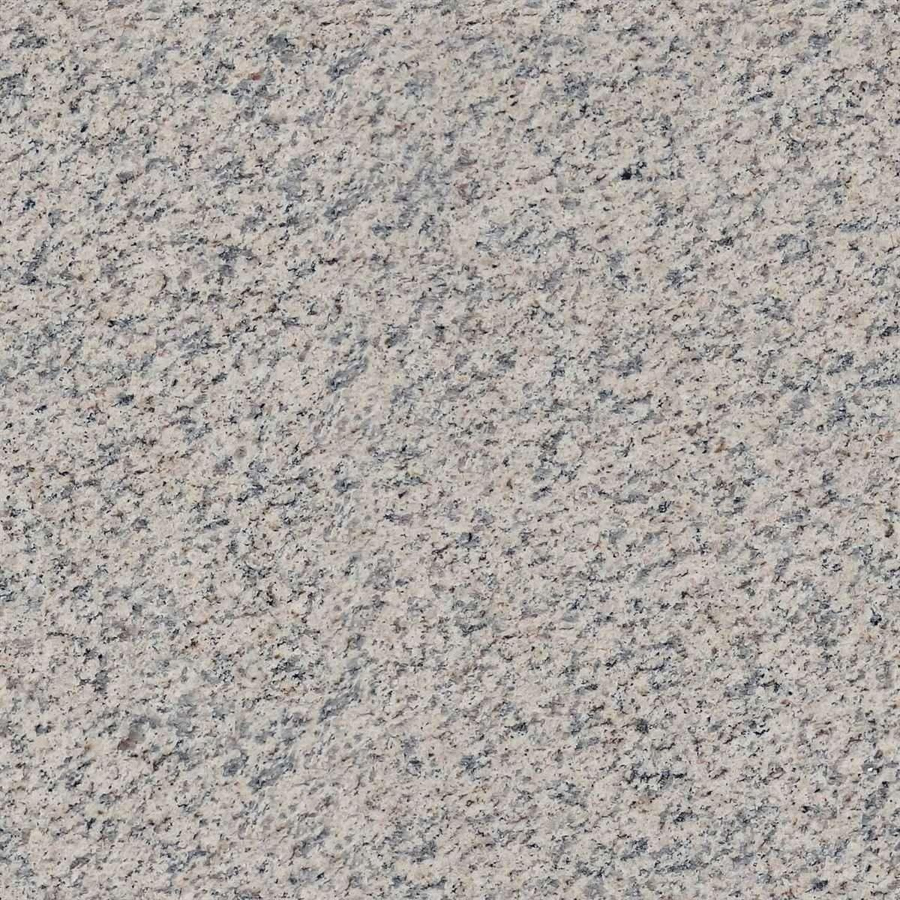

店のこと
確認できたのは、所在地とInstagram
リスヤパン さんについて、現時点で確認できたのは所在地とInstagramのアカウントです。営業時間・メニュー・価格などは準備中としています。実際の内容は、貴店にご確認のうえ掲載します。



もうひとつの読みもの
六つの部位をくわしく
- 1外枠リング
- 内側にぎざぎざの歯を刻んだ、土台になる輪です。外側にも歯がある向きでは、円盤が輪の外をまわる使い方もあります。
- 2小円盤
- 外枠の内側でころがる、小さな歯つきの円盤。歯の数の組み合わせで、描かれる線の巻き数が決まります。
- 3ペン穴
- 円盤の中心からの距離がちがう穴が、いくつか並びます。中心に近いほどゆるやかな曲線、遠いほど大きなループになります。
- 4ペン
- 穴に先端を差し入れ、円盤をまわしながら動かします。色を変えて重ね描きするのも図の楽しみ方です。
- 5用紙
- 外枠の下に敷く紙です。紙が動くと線がずれるので、しっかり固定しておきます。
- 6固定タック
- 外枠を紙にとめる、粘着の小片です。貼って、はがして、また貼れる性質のものです。
これは制作側の連想で、お店の理念・由来とは無関係です。実際の製品の仕様を示すものでもありません。


このページについて
連想のしくみ
お店のことが分かる情報はまだ少ないため、このサンプルでは「円を重ねて線を描く」という道具の姿を借りて、ページの形を作りました。お店の内容を示すものではありません。


